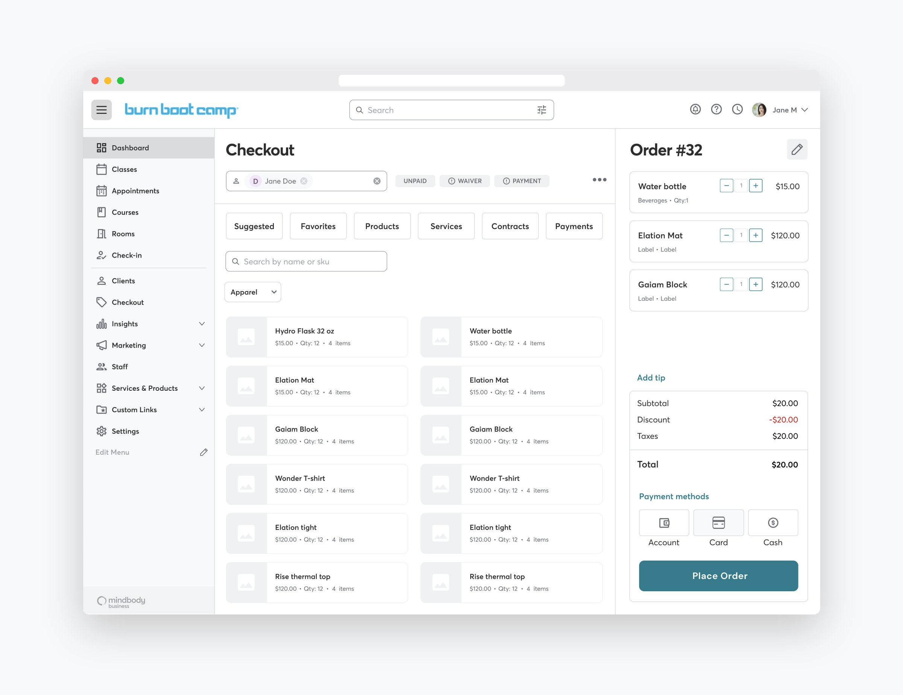
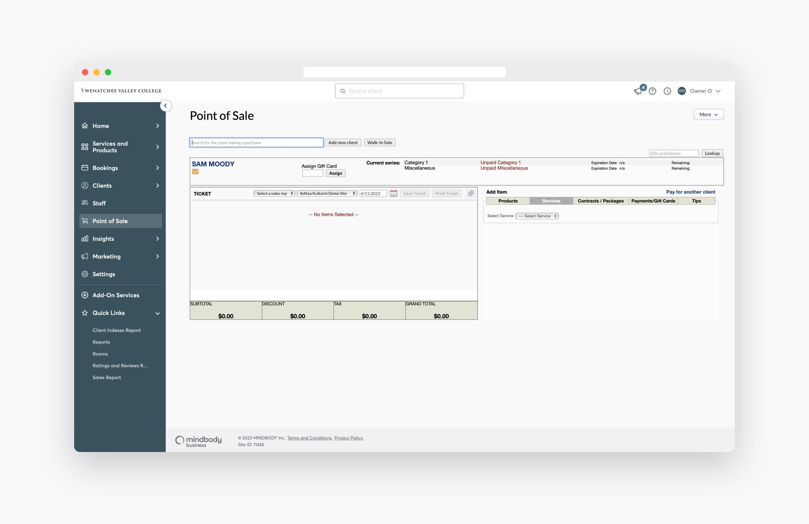
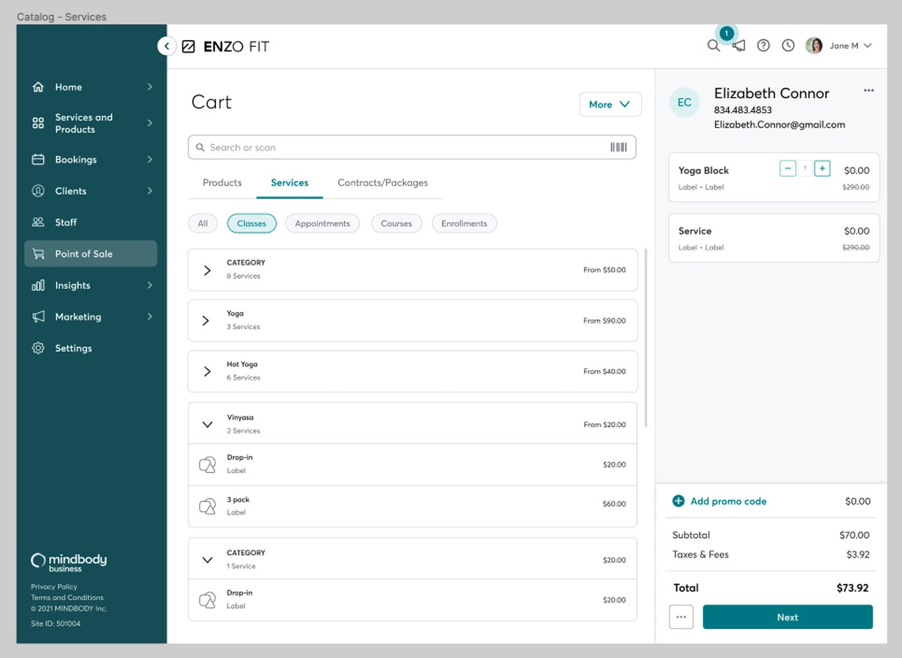
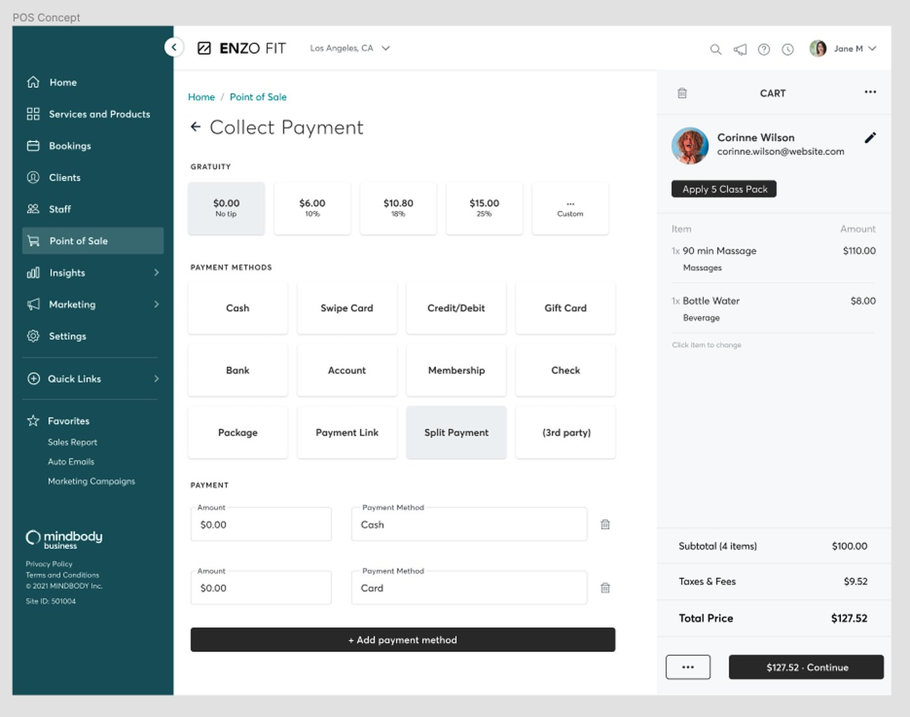
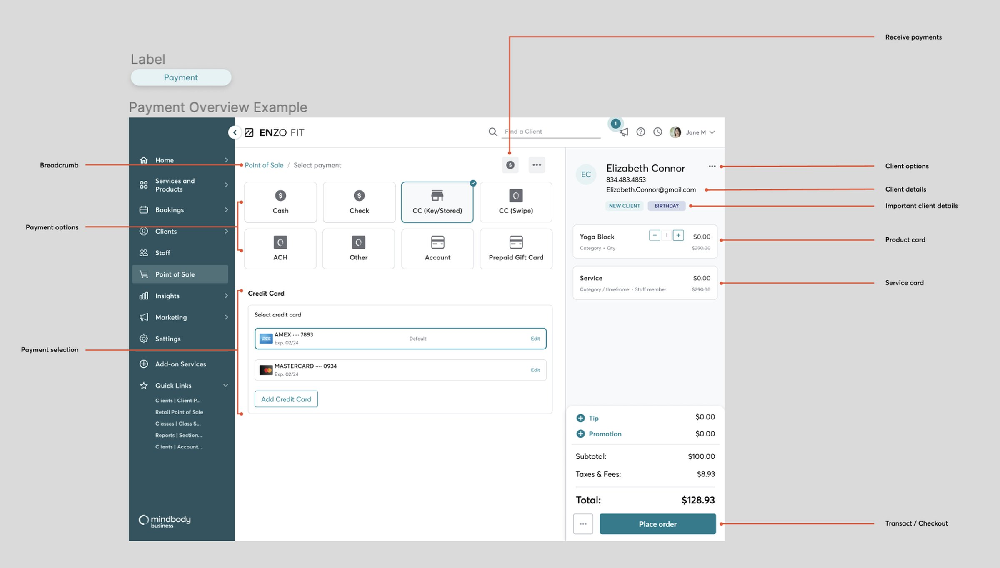

Point of Sale
Redesigning the checkout front desk staff use all day, from a dense ticket form to a cart built around the client standing in front of them.

The busiest screen
in the studio.
Point of Sale is where every sale in a studio happens: class packs, memberships, retail, gift cards and tips, usually with a line at the desk and a phone ringing.
The existing screen was a ticket form. Client details, a ticket table, four tabs of dropdowns for adding items, a grid of totals and a row of eight payment buttons, all at the same weight. I redesigned it as a cart: find the client, add anything from one searchable catalog, keep the order and total in view the whole time, and pay in one place.
Screen for the client, the catalog, the order and payment, where the old flow split them up
Ways to browse the catalog: Suggested, Favorites, Products, Services, Contracts and Payments
Rounds of design: an early concept, catalog and payment explorations, and the final prototype
A form built for the system,
not the person at the desk.
Front desk staff are rarely trained designers of their own workflow. They check people in, answer questions and ring up sales between classes. The legacy screen made them do the system's work: pick a tab, pick a category from a dropdown, pick the item from another dropdown, then scroll to find where payment starts.
Important information hid in plain sight. Unpaid classes showed up as a line of red text in a block of client details, easy to miss with someone waiting. Every payment type, from cash to ACH to prepaid gift cards, was a small button of equal weight. The walkthrough below is the legacy flow, recorded in the product.

Two ideas carried
the redesign.
I owned the design of the new checkout on the Payments team, from early concepts through an interactive prototype, working with our product manager and engineers. I tested ideas as clickable walkthroughs rather than static screens, because checkout is about flow and speed, and a still image hides both.
Keep the order in view
The cart lives in a fixed panel on the right: the client, each item with a quantity stepper, tip, subtotal, discount, taxes, total and the button to place the order. Staff can browse, search or change their mind on the left without ever losing track of what they are charging.
Surface what the client owes before checkout
Status chips sit next to the client's name: Unpaid, Waiver, Payment. And when staff add a class pack, the product asks whether to apply it to the client's unpaid classes. Problems get solved at the counter instead of in an end of month report.
Three rounds,
tested as flows.



Ringing up a sale,
start to finish.
The final prototype runs a full sale: search for a client, add a product and pick its color and size (with a low inventory warning), add a class pack and apply it to unpaid classes, and pay by card. The order on the right updates at every step.
A checkout built
around the person.
Fewer places to look
Client, catalog, order and payment share one screen, so staff never scroll away from the total or lose the order while they browse.
Problems caught at the counter
Unpaid classes, missing waivers and payment issues show up next to the client's name, and the product offers to fix them during the sale.
Faster everyday sales
Suggested and Favorites put the items a desk sells most one tap away, and search works by name or SKU.
A pattern the platform can reuse
The cart panel, item cards and payment options were documented as parts, so the same structure could carry into other places Mindbody takes payment.